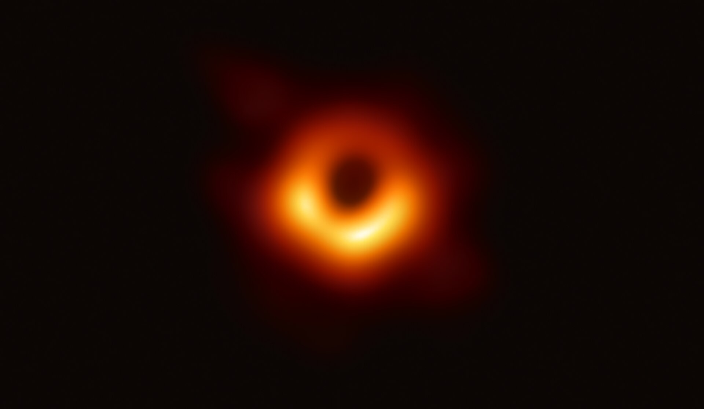
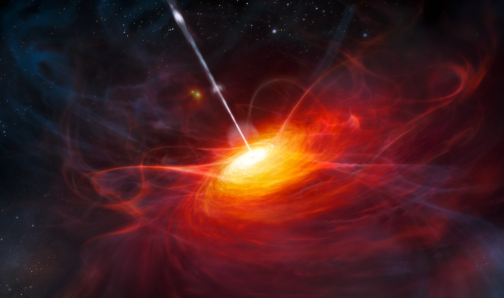
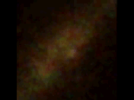
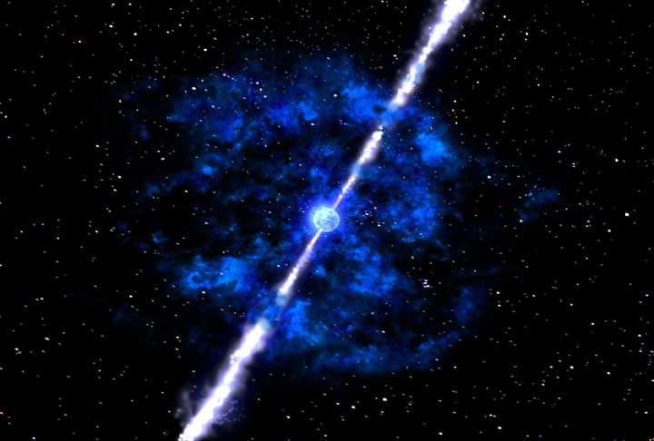
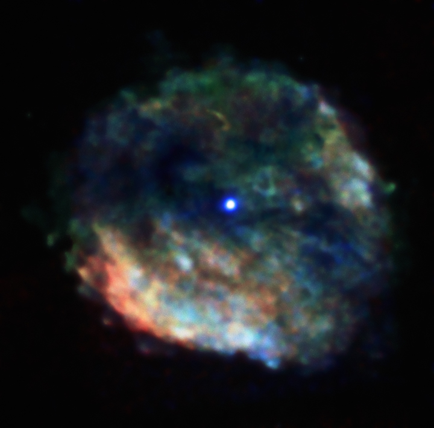
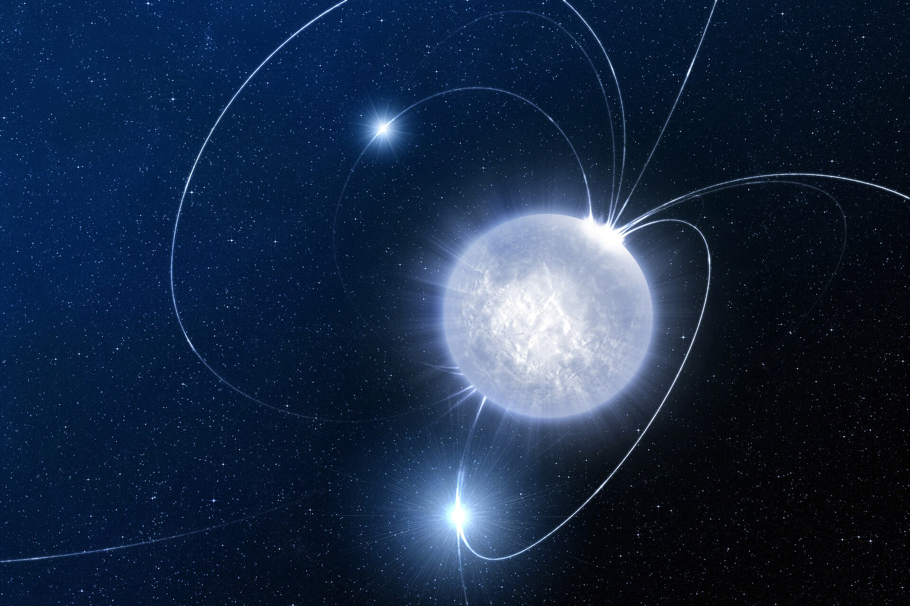
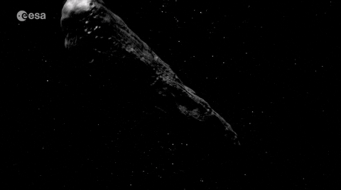
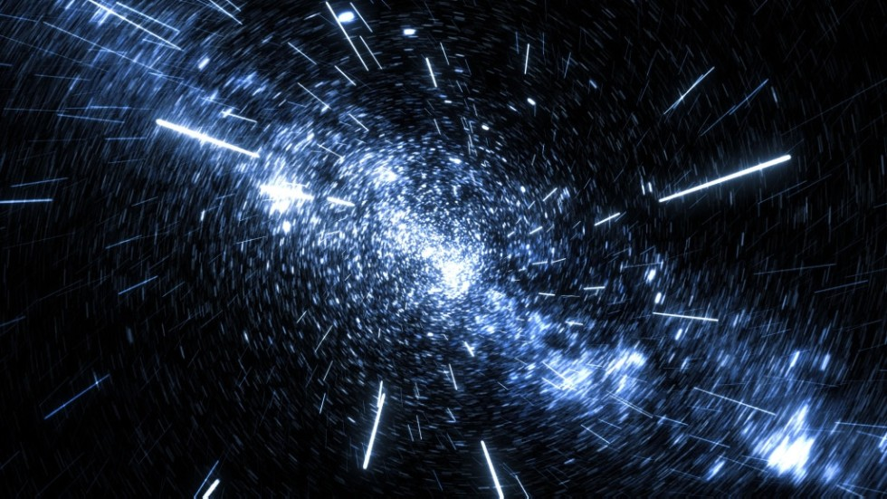
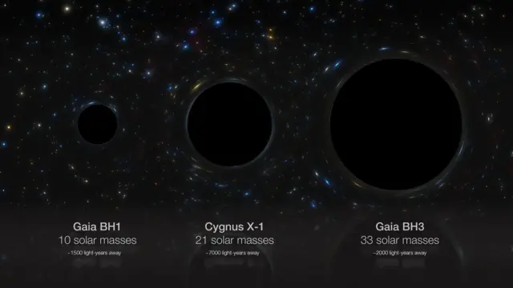
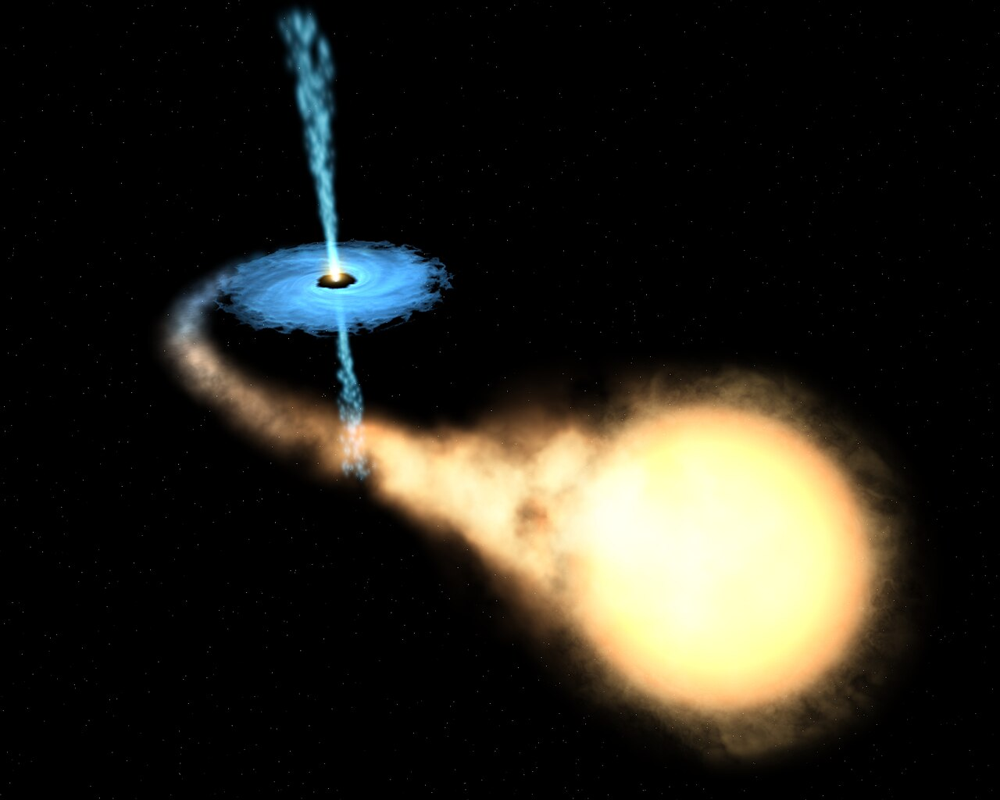

| Об'єкт | Рік відкриття | Хто відкрив | Потенційна небезпека | ||||||||||
|---|---|---|---|---|---|---|---|---|---|---|---|---|---|
|
 1. Чорна діра |
1915 | Альберт Ейнштейн | Екстремальне спотворення простору-часу та дуже сильна гравітація, перейшовши радіус Шварцшильда шляху назад немає | ||||||||||
|
 2. Квазари |
1963 | Мартін Шмідт | Найяскравіші об'єкти у Всесвіті, живляться надмасивними чорними дірами, випускаючи енергію в тисячі разів більше, ніж Чумацький Шлях. | ||||||||||
|
 3. Пульсари |
1967 | Джоселін Белл Бернелл | Нейтронні зірки, що швидко обертаються, випромінюють радіохвилі з точністю атомного годинника. Їхні магнітні поля можуть бути небезпечні на відстані. | ||||||||||
|
 4. Гамма-сплески |
1967 | Сплески виявлені випадково завдяки спутнику Vela | Короткі, але неймовірно потужні сплески гамма-випромінювання, здатні стерти життя планети на тисячах світлових років. | ||||||||||
|
 5. Наднові типу Ia |
Спостереження 1930-1940х | Фред Хойл та У. Фаулер | Вибухи білих карликів у подвійних системах виділяють стільки енергії, що можуть знищити планету в радіусі багатьох світлових років. | ||||||||||
|
 6. Магнітари |
1992 | Роберт Дункан та Кристофер Томпсон | Нейтронні зірки з магнітним полем у трильйони разів сильніші за Земний. Можуть викликати сильні гамма-сплески та руйнувати магнітосфери планет. | ||||||||||
|
 7. Оумуамуа |
2017 | Роберт В. Уебк | Міжзірковий астероїд. Його швидкість~315 000 км/год (≈ 87, 5 км/год) відносно Сонця Розміри: приблизно 230-800 м завдовжки і 35-167 м завширшки, з дуже витягнутою формою. Контакт із Землею викликав би неймовірні руйнування та колапс планети | ||||||||||
|
 8. Темна матерія та “темні галактики” |
1933 | Фріц Цвіккі (помітив гравітаційні ефекти) | Об'єкти, що не випромінюють світло, можуть створювати гравітаційні аномалії та руйнувати галактики при зіткненнях. | ||||||||||
|
 9. Чорні діри малої маси поблизу” |
1916 | Карл Шварцшильд | Малі неактивні чорні діри можуть пройти через Сонячну систему, дестабілізуючи орбіти планет. | ||||||||||
|
 10. Рентгенівські подвійні системи |
1971 | Том Болтоном | Об'єкти типу Cygnus X-1 викидають потоки рентгенівського та гамма-випромінювання, потенційно смертельні для планет поблизу | ||||||||||